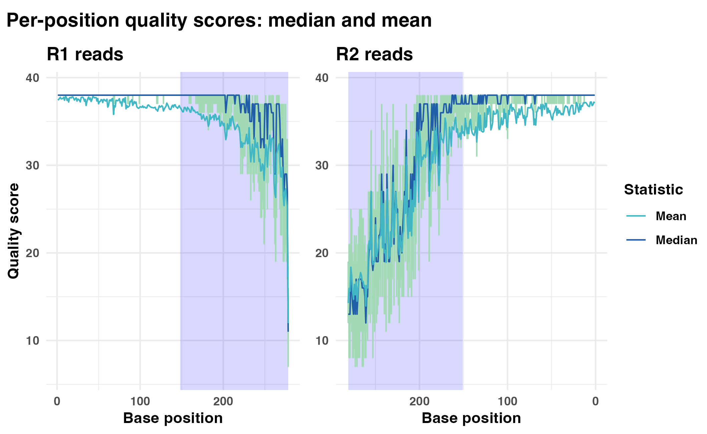
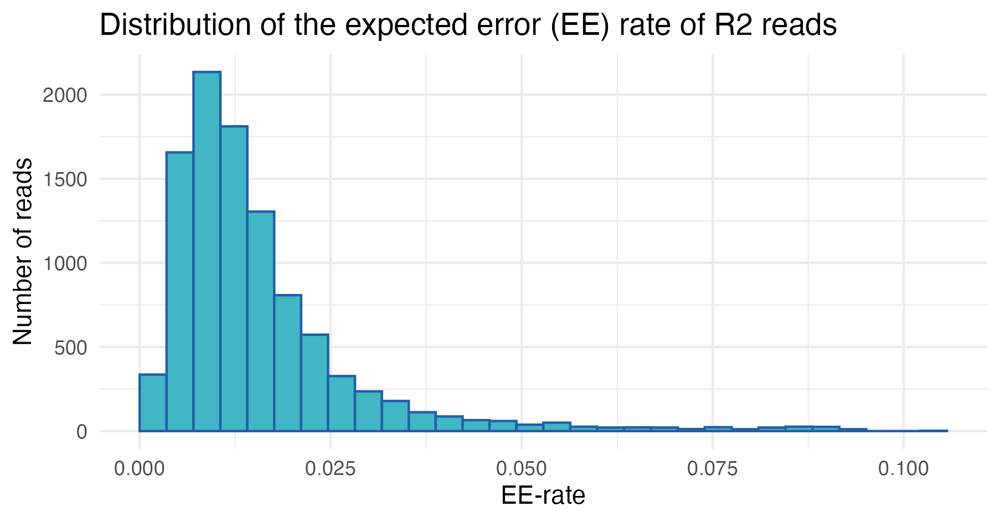
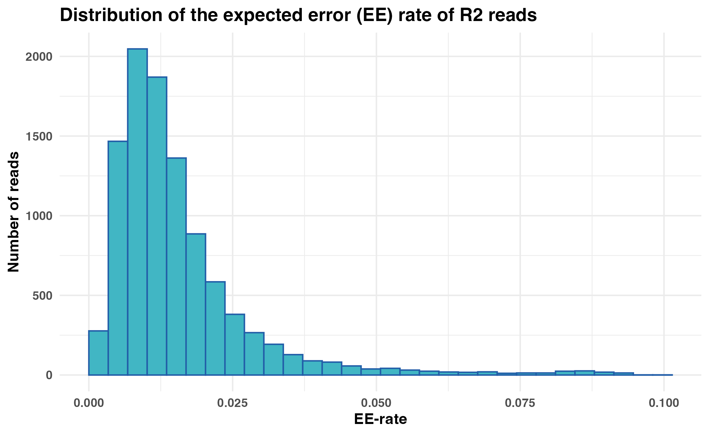
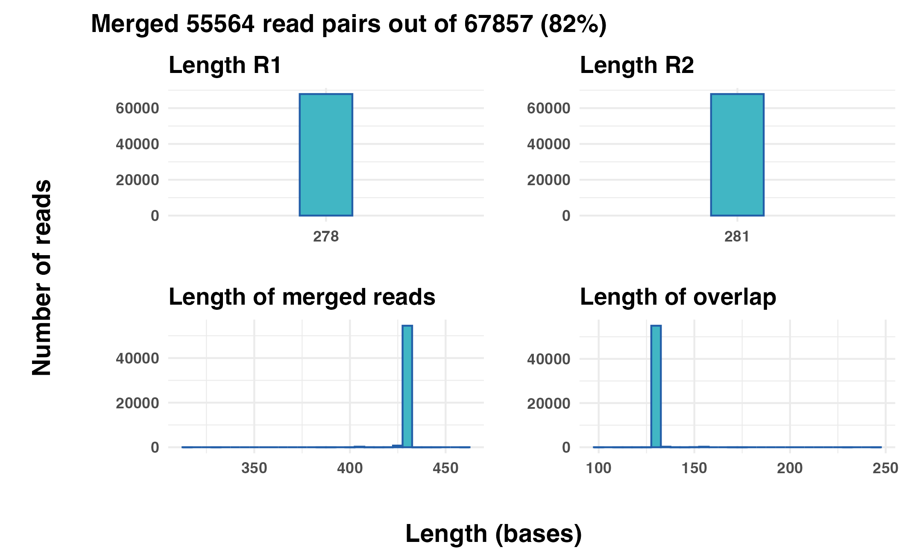
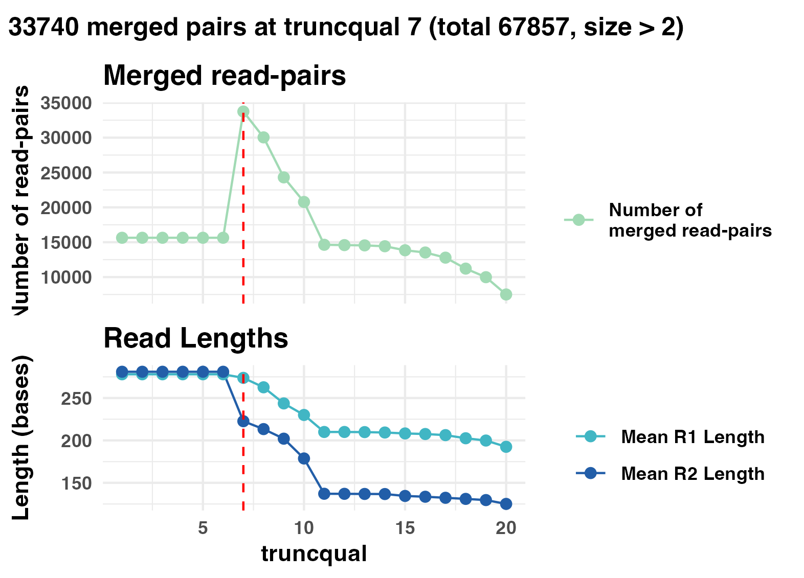
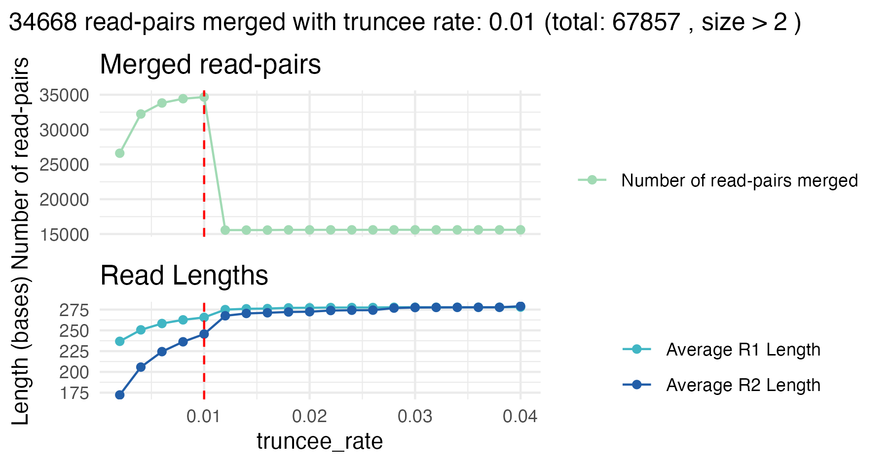
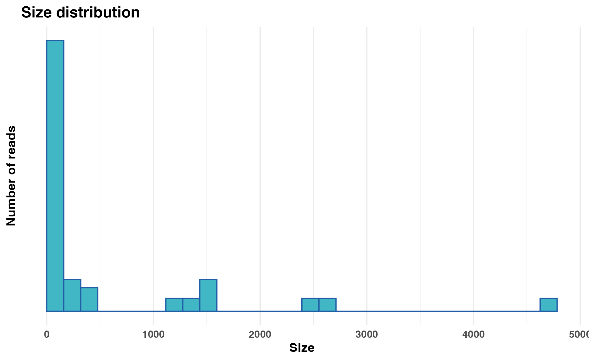
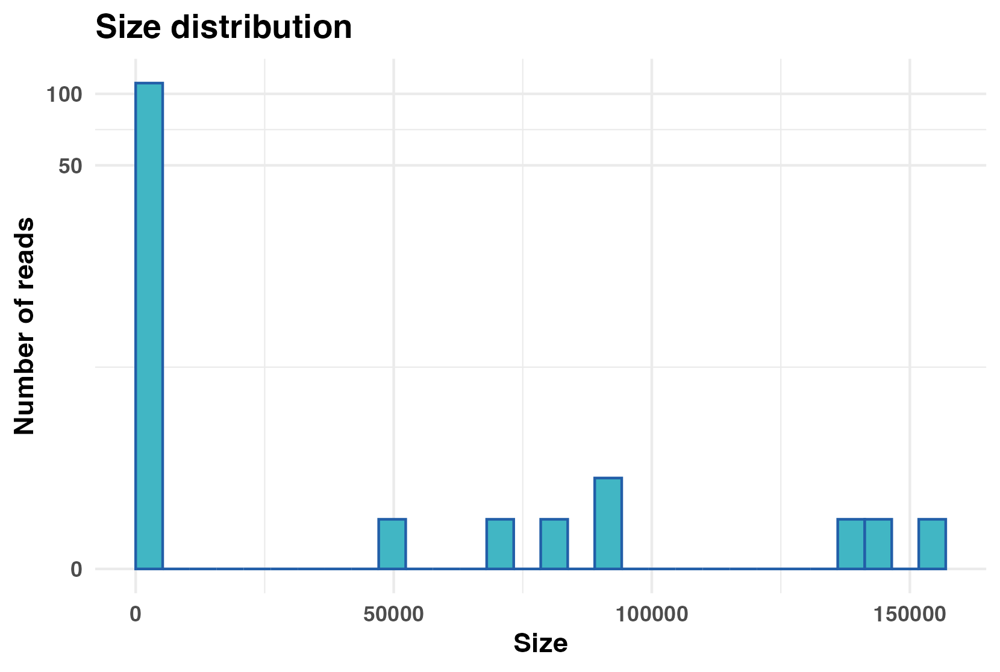

Introduction
Rsearch is an R package designed for handling and
analyzing targeted sequencing data. The package provides a user-friendly
interface for core VSEARCH functions in addition to tools
for visualization and parameter optimization.
In this tutorial, we will walk through an example workflow using the
Rsearch package to process a small multi-sample dataset.
For this tutorial, we will use Illumina-sequenced paired-end reads,
stored in FASTQ files and separated by sample.
Using Rsearch, we will demonstrate how to perform key
processing steps, including:
- Inspecting raw data
- Trimming and filtering
- Merging read pairs
- Dereplicate reads
- Chimera detection
- Clustering reads into OTUs
- Taxonomic assignment
Finally, we will show how the data generated in Rsearch
can be imported into the phyloseq R package for downstream
microbiome analysis. You can jump directly to that section here.
For the impatient
If you prefer to run the entire example workflow without inspecting intermediate steps, a streamlined version is provided at the end of the tutorial, using the pipe operator.
Installing Rsearch
To install Rsearch from GitHub, you will first need the
devtools package. If it’s not installed yet, you can
install it by running:
# Install devtools if not already installed
if (!requireNamespace("devtools", quietly = TRUE)) {
install.packages("devtools")
}If you don’t already have it, you will need to install the
phyloseq package before installing
Rsearch:
# Install phyloseq if not already installed
if (!requireNamespace("BiocManager", quietly = TRUE)) {
install.packages("BiocManager")
}
BiocManager::install("phyloseq")Now you are ready to install Rsearch:
# Install Rsearch from GitHub
devtools::install_github("CassandraHjo/Rsearch")After installation, it is a good idea to restart your R session (in Rstudio: Session > Restart R) to make sure everything is properly loaded.
Rsearch requires that you have VSEARCH
installed. VSEARCH performs the heavy computational tasks
quickly, while Rsearch allows you to run these operations
conveniently from within R. Without Rsearch, you would need
to run VSEARCH commands manually from the command line.
Installation instruction for VSEARCH are available on
the Rsearch GitHub page.
You can verify the installation of both Rsearch and
VSEARCH by running:
library(Rsearch)
packageVersion("Rsearch")[1] '1.0.0'
vsearch()The VSEARCH executable is:vsearchThis is a valid command to invoke VSEARCH on this computer!Getting started
Example data
The example data set in this tutorial is a subset of the samples from the publicly available project Sequencing marine seafloor samples.
Download a zipped archive with example data here
The data set contains samples with zymbiomics mock communities.
After unpacking the zipped archive you should have:
- A text-file
metadata.txt - A folder named
fastqwith 16 pairs of FASTQ files.
First, define the paths to your FASTQ files and metadata file:
fastq_path <- "../tutorial_data/fastq" # Change to the directory containing the FASTQ files
metadata_file <- "../tutorial_data/metadata.txt" # Change to the file path of your metadata fileIf you see the expected files listed and no errors, you are ready to proceed.
Inspect the raw data
First, we read the metadata file:
sample.tbl <- read_tsv(metadata_file)
cat("Number of samples in the metadata file: ", nrow(sample.tbl), "\n")Number of samples in the metadata file: 16 Read quality
To help you run the tutorial interactively, we have included a
break statement inside some for-loops. This
causes the for-loop to stop after processing the first
sample, allowing you to quickly preview results. You can simply remove
the break line to process all samples.
We assess the read quality using plot_base_quality,
which plots the mean and median base quality scores across all bases for
each read. Error bars show the interquartile range (25th to 75th
percentiles). Note that the x-axis for the R2 panel has been flipped to
remind us that R1 and R2 reads are sequenced in opposite directions.
for(i in 1:nrow(sample.tbl)){
R1.tbl <- readFastq(file.path(fastq_path, sample.tbl$R1_file[i]))
R2.tbl <- readFastq(file.path(fastq_path, sample.tbl$R2_file[i]))
gg.obj <- plot_base_quality(R1.tbl, R2.tbl, show_overlap_box = TRUE)
print(gg.obj)
break # Remove this line to loop through all samples
}
In the first sample, we see that the R1 reads have generally higher and more stable quality compared to the R2 reads, which is a common feature of Illumina paired-end sequencing. The shaded regions at the curve end represent the average overlap length when merging the paired-end reads, offering insight into the quality within those overlapping segments. As expected, read quality declines toward the ends, especially for the R2 reads, suggesting that trimming and filtering may be necessary before proceeding with downstream analyses.
Expected Error (EE) rate distribution
We can also explore the distribution of expected error (EE) rates across reads, which provides a measure of read quality (lower EE rates indicate higher quality).
for(i in 1:nrow(sample.tbl)){
R1.tbl <- readFastq(file.path(fastq_path, sample.tbl$R1_file[i]))
R2.tbl <- readFastq(file.path(fastq_path, sample.tbl$R2_file[i]))
R1.gg.obj <- plot_ee_rate_dist(R1.tbl,
plot_title = "Distribution of the expected error (EE) rate of R1 reads")
R2.gg.obj <- plot_ee_rate_dist(R2.tbl,
plot_title = "Distribution of the expected error (EE) rate of R2 reads")
print(R1.gg.obj)
print(R2.gg.obj)
break # Remove this line to loop through all samples
}

In the first sample, most reads have low expected error rates, as indicated by the left-skewed distributions. However, a subset exhibits higher EE rates, suggesting the precence of low-quality reads that require further inspection and may be candidates for removal.
Trimming and filtering
Choosing the best trimming and filtering settings is important for obtaining good merging results.
- Trimming: Removing poor-quality bases from the ends of the reads.
- Filtering: Removing whole reads with poor quality.
Rsearch provides two new helper functions,
vs_optimize_truncqual and
vs_optimize_truncee_rate, to optimize the trimming. These
functions search parameter combinations to find the settings that yield
the best merging results. For details, see the section on optimizing trimming
settings.
Merging raw reads
As an optional but informative step, merging the raw reads before trimming and filtering can help establish a baseline understanding of read overlap and merging success.
Here we try to merge all the reads we have got for the first sample,
without any trimming and filtering. The vs_merging_lengths
function can be used to plot some merging statistics:
for(i in 1:nrow(sample.tbl)){
R1.tbl <- readFastq(file.path(fastq_path, sample.tbl$R1_file[i]))
R2.tbl <- readFastq(file.path(fastq_path, sample.tbl$R2_file[i]))
merging_raw.tbl <- vs_merging_lengths(fastq_input = R1.tbl,
reverse = R2.tbl)
print(attr(merging_raw.tbl, "plot"))
print(data.frame(attr(merging_raw.tbl, "statistics")))
break # Remove this line to loop through all samples
}
| Tot_num_pairs | Merged | Mean_Read_Length_before_merging | Mean_Read_Length_after_merging | StdDev_Read_Length | R1 | R2 |
|---|---|---|---|---|---|---|
| 67857 | 55564 | 279.5 | 428.98 | 2.08 | R1.tbl | R2.tbl |
From the first sample, approximately 82% (55 564 out of 67 857) of the read pairs merged successfully. From the two top panels we can see the length distribution of the R1 and R2 reads. In this case all of the R1 and R2 reads are of equal length: 278 and 281 bases long, respectively.
The two bottom panels show the distribution of the length of the merged reads, and the distribution of the overlap length. In this example, almost all merged reads have a length of around 430 bases, and the length of the overlap is around 130 bases.
The results from merging the raw reads above includes singletons,
merged read pairs with a copy number of 1. If we assume that sequencing
errors are more likely to occur among singletons and remove them, we are
left with approximately 49% (33 259 out of 67 857) successfully merged
read pairs when merging the raw read pairs. This experiment can easily
be performed using the vs_fastq_mergepairs and
vs_fastx_uniques functions, as shown below.
library(stringr)
library(tidyverse)
m_raw.tbl <- vs_fastq_mergepairs(R1.tbl,
R2.tbl,
minovlen = 10,
minlen = 0,
threads = 1)
d_raw.tbl <- vs_fastx_uniques(m_raw.tbl) %>%
mutate(size = str_extract(Header, "(?<=;size=)\\d+")) %>%
mutate(size = as.numeric(size)) %>%
filter(size > 1)
sum(d_raw.tbl$size)Together this tells us:
- We should discard the very short reads, and we may set a threshold at 50 bases.
- The rather long overlap means we may trim the 3’ ends of the reads quite a lot and still maintain a long enough overlap to merge.
Optimizing trimming settings
At this stage, Rsearch introduces a new step in the
pipeline: optimizing the trimming of reads to improve merging results.
The aim is not only to maximize the number of merged reads, but also to
ensure that the merged reads are of high quality. For this purpose,
‘Rsearch’ introduces two new functions that systematically explore
ranges of truncqual and truncee_rate values
and report the settings that give the best result. Although the
optimization is run on a single sample, we find that samples from the
same sequencing run usually behave similarly. We still assume that
sequencing errors are more frequent among singletons, the evaluation
focuses on merged reads with a copy number of 2 or more. We assume that
a larger number of such reads is taken as evidence for better merging.
During optimization the reads are also filtered to remove the reads with
average expected error greater than 0.01 (default). This threshold can
be adjusted via the maxee_rate parameter when working with
other datasets.
Optimize truncqual value
The vs_optimize_truncqual function finds the optimal
truncqual value for truncating reads, i.e. trimming at the
3’ end. The truncqual value is the quality score threshold
at which the reads are truncated, starting from the first base. The
function tests a range of truncqual values and visualizes
the effect on merging success. The optimal truncqual value
is measured by the number of merged read pairs with a copy number above
the number specified by min_size, after dereplication.
The function may take some time to run, but you can view the progress through a progress bar in the console.
for(i in 1:nrow(sample.tbl)){
R1.tbl <- readFastq(file.path(fastq_path, sample.tbl$R1_file[i]))
R2.tbl <- readFastq(file.path(fastq_path, sample.tbl$R2_file[i]))
optimize_truncqual.tbl <- vs_optimize_truncqual(fastq_input = R1.tbl,
reverse = R2.tbl,
sample_size = NULL
)
print(attr(optimize_truncqual.tbl, "plot"))
break # Remove this line to loop through all samples
}
For the first sample, the best truncqual value is 7. At
this setting, approximately 50% (33 740 out of 67 857) read pairs are
successfully merged.
Although this number is just slightly higher compared to the results
from the raw merging, the important difference is that only high-quality
merged reads with copy number 2 or more and an average expected error
below 0.01 are considered here. Thus, trimming with
truncqual = 7 effectively retains higher-confidence reads
at the cost of discarding lower-quality ones, which is exactly what we
want.
Why not merge all reads here? Because singleton reads often have sequencing errors, and this will affect the merging. We base the optimization entirely on multicopy or high-quality reads.
Optimize truncee_rate value
Similarly, the vs_optimize_truncee_rate function
optimizes the trimming with the truncee_rate parameter
rather than truncqual. The truncee_rate value
truncates the sequences so that their average expected error per base is
not higher than the specified value. The function tests a range of
truncee_rate values and visualizes the effect on merging
success. The optimal truncee_rate value is measured by the
number of merged read pairs with a copy number above the number
specified by min_size, after dereplication.
The function may take some time to run, but you can view the progress through a progress bar in the console.
for(i in 1:nrow(sample.tbl)){
R1.tbl <- readFastq(file.path(fastq_path, sample.tbl$R1_file[i]))
R2.tbl <- readFastq(file.path(fastq_path, sample.tbl$R2_file[i]))
optimize_truncee_rate.tbl <- vs_optimize_truncee_rate(fastq_input = R1.tbl,
reverse = R2.tbl,
sample_size = NULL
)
print(attr(optimize_truncee_rate.tbl, "plot"))
break # Remove this line to loop through all samples
}
The optimal truncee_rate for this sample is 0.01, with
approximately 51% (34 668 out of 67 857) successfully merged read pairs.
Again, the number of merged read pairs is just slightly higher compared
to merging raw reads, but here the reads retained are of higher quality
and reliability, because singletons and low quality reads are removed,
which is critical for downstream clustering and analysis.
Based on the results from the optimization plots, the
truncqual and truncee_rate values can be set
in the trimming and filtering function:
vs_fastx_trim_filt.
Trimming and filtering reads
Now we apply trimming and filtering using reasonable parameters. We
will use the same for-loop as above to loop through all
samples, but this time we will add the vs_fastx_trim_filt
function to trim and filter all the reads.
for(i in 1:nrow(sample.tbl)){
R1.tbl <- readFastq(file.path(fastq_path, sample.tbl$R1_file[i]))
R2.tbl <- readFastq(file.path(fastq_path, sample.tbl$R2_file[i]))
# Trim and filter
R1_filt.tbl <- vs_fastx_trim_filt(R1.tbl, R2.tbl,
minlen = 50,
truncee_rate = 0.01,
stripleft = 12)
R2_filt.tbl <- attr(R1_filt.tbl, "reverse")
print(data.frame(attr(R1_filt.tbl, "statistics")))
break # Remove this line to loop through all samples
}| Kept_Sequences | Discarded_Sequences | fastx_source | reverse_source |
|---|---|---|---|
| 60977 | 6880 | R1.tbl | R2.tbl |
We also trim 12 bases from the 5’ end (stripleft = 12)
of each read, based on the earlier quality assessment.
We can again assess the read quality after trimming and filtering
using plot_base_quality:
for(i in 1:nrow(sample.tbl)){
R1.tbl <- readFastq(file.path(fastq_path, sample.tbl$R1_file[i]))
R2.tbl <- readFastq(file.path(fastq_path, sample.tbl$R2_file[i]))
# Trim and filter
R1_filt.tbl <- vs_fastx_trim_filt(R1.tbl, R2.tbl,
minlen = 50,
truncee_rate = 0.01,
stripleft = 12)
R2_filt.tbl <- attr(R1_filt.tbl, "reverse")
gg.obj <- plot_base_quality(R1_filt.tbl, R2_filt.tbl, show_overlap_box = TRUE)
print(gg.obj)
break # Remove this line to loop through all samples
}The plot shows that the read quality has improved after trimming and filtering. After trimming, the base quality scores in plot two are consistently higher across all positions.
Merging trimmed and filtered reads
After trimming and filtering, we merge the read pairs using the
vs_fastq_mergepairs function. We then expand our previous
for-loop to include merging like this:
for(i in 1:nrow(sample.tbl)){
R1.tbl <- readFastq(file.path(fastq_path, sample.tbl$R1_file[i]))
R2.tbl <- readFastq(file.path(fastq_path, sample.tbl$R2_file[i]))
# Trim and filter
R1_filt.tbl <- vs_fastx_trim_filt(R1.tbl, R2.tbl,
minlen = 50,
truncee_rate = 0.01,
stripleft = 12)
R2_filt.tbl <- attr(R1_filt.tbl, "reverse")
# Merge reads
merged.tbl <- vs_fastq_mergepairs(R1_filt.tbl, R2_filt.tbl)
print(data.frame(attr(merged.tbl, "statistics")))
break # Remove this line to loop through all samples
}| Tot_num_pairs | Merged | Mean_Read_Length_before_merging | Mean_Read_Length_after_merging | StdDev_Read_Length | R1 | R2 |
|---|---|---|---|---|---|---|
| 60977 | 58323 | 254.92 | 404.97 | 2.33 | R1_filt.tbl | R2_filt.tbl |
In the statistics table from the merging one can see the total number of read pairs, the number of merged reads, and length statistics about the reads before and after merging. For this sample 58 323 out of 60 977 read pairs were successfully merged. The mean read length after merging is approximately 405 bases, with a standard deviation of 2.3 bases.
Dereplicating the merged reads
The merged reads are dereplicated to remove redundancy using the
vs_fastx_uniques function. We expand our
for-loop to include dereplication. We want to add the
sample identifier to the header of each sequence, and this is done by
using the sample parameter.
for(i in 1:nrow(sample.tbl)){
R1.tbl <- readFastq(file.path(fastq_path, sample.tbl$R1_file[i]))
R2.tbl <- readFastq(file.path(fastq_path, sample.tbl$R2_file[i]))
# Trim and filter
R1_filt.tbl <- vs_fastx_trim_filt(R1.tbl, R2.tbl,
minlen = 50,
truncee_rate = 0.01,
stripleft = 12)
R2_filt.tbl <- attr(R1_filt.tbl, "reverse")
# Merge reads
merged.tbl <- vs_fastq_mergepairs(R1_filt.tbl, R2_filt.tbl)
# Dereplicate
derep.tbl <- vs_fastx_uniques(fastx_input = merged.tbl,
sample = sample.tbl$sample_id[i])
break # Remove this line to loop through all samples
}
cat("Number of unique reads after dereplication: ", nrow(derep.tbl), "\n")Number of unique reads after dereplication: 25645 Plot size distribution
An optional step is to plot the size (copy number) distribution of
the dereplicated reads, using the plot_size_dist
function:
p <- plot_size_dist(fastx_input = derep.tbl)
# Adding pseudo log transformation to avoid infinite negative values in the plot
p + scale_y_continuous(trans = pseudo_log_trans(base = 10))
In this example, we can see that most of the dereplicated reads have a low copy number, and only a few reads have high copy numbers.
Chimera detection
Chimera detection and removal can be performed using the
vs_uchime_denovo function. Again, we expand our
for-loop to include chimera detection.
This is the last step in the preprocessing of the reads, and we will have to store our results somewhere for downstream analysis.
- Option 1: Store the results from each sample in a FASTA table.
- Option 2: Write the results to file.
Both options are demonstrated in the code below, but we will use the first option in this tutorial.
# Create empty table to store results
all.tbl <- tibble()
for(i in 1:nrow(sample.tbl)){
R1.tbl <- readFastq(file.path(fastq_path, sample.tbl$R1_file[i]))
R2.tbl <- readFastq(file.path(fastq_path, sample.tbl$R2_file[i]))
# Trim and filter
R1_filt.tbl <- vs_fastx_trim_filt(R1.tbl, R2.tbl,
minlen = 50,
truncee_rate = 0.01,
stripleft = 12)
R2_filt.tbl <- attr(R1_filt.tbl, "reverse")
# Merge reads
merged.tbl <- vs_fastq_mergepairs(R1_filt.tbl, R2_filt.tbl)
# Dereplicate
derep.tbl <- vs_fastx_uniques(fastx_input = merged.tbl,
sample = sample.tbl$sample_id[i])
# Detect chimeras
derep_wo_chimera.tbl <- vs_uchime_denovo(derep.tbl)
# Store results for downstream analysis
# Option 1: Append results to all.tbl
all.tbl <- bind_rows(all.tbl, derep_wo_chimera.tbl)
# Option 2: Write results to file
# writeFasta(derep_wo_chimera.tbl,
# out.file = file.path("fasta", # Change to the directory where you want to save the FASTA files
# str_c(sample.tbl$sample_id[i], ".fasta")))
# break # Remove this line to loop through all samples
}Clustering
Clustering sequences at a given identity threshold to create OTUs can
be performed using the vs_cluster_size function. We will
now use the table with all the reads from all samples from earlier
(all.tbl).
If you wrote the results to file you need to read the files into R again:
files <- list.files("../tutorial_data/fasta", # Change to the directory where you saved your FASTA files
full.names = TRUE)
all.tbl <- lapply(files, readFasta) %>%
bind_rows()Alternatively, if you don’t want to run the entire pipeline yourself,
you can use the all_tbl.txt.zip object that is included in
the example data.
all.tbl <- read_tsv("path/to/all_tbl.txt.zip") # Change to the file path of your all_tbl.txt.zip fileNext we dereplicate the reads again, but this time we will use the
vs_fastx_uniques function with minuniquesize
set to 2. This will create a FASTA table with all the
unique sequences from all samples with a copy number above
2. We will also use the relabel parameter, to
relabel the headers of the unique sequences.
all_derep.tbl <- vs_fastx_uniques(all.tbl,
minuniquesize = 2)| Header | Sequence |
|---|---|
| M07166:204:000000000-KN9DC:1:1101:22227:1435;sample=P10_ZB;size=74637 | CGCAATGGACGAAAGTCTGACGGAGCAACGCCGCGTGAGTGATGAAGGTTTTCGGATCGTAAAGCTCTGTTGTTAGGGAAGAACAAGTACCGTTCGAATAGGGCGGTACCTTGACGGTACCTAACCAGAAAGCCACGGCTAACTACGTGCCAGCAGCCGCGGTAATACGTAGGTGGCAAGCGTTGTCCGGAATTATTGGGCGTAAAGGGCTCGCAGGCGGTTCCTTAAGTCTGATGTGAAAGCCCCCGGCTCAACCGGGGAGGGTCATTGGAAACTGGGGAACTTGAGTGCAGAAGAGGAGAGTGGAATTCCACGTGTAGCGGTGAAATGCGTAGAGATGTGGAGGAACACCAGTGGCGAAGGCGACTCTCTGGTCTGTAACTGACGCTGAGGAGCGAAAGCGTGG |
| M07166:204:000000000-KN9DC:1:1101:21037:1765;sample=P10_ZB;size=60912 | CACAATGGGCGCAAGCCTGATGCAGCCATGCCGCGTGTATGAAGAAGGCCTTCGGGTTGTAAAGTACTTTCAGCGGGGAGGAAGGTGTTGTGGTTAATAACCGCAGCAATTGACGTTACCCGCAGAAGAAGCACCGGCTAACTCCGTGCCAGCAGCCGCGGTAATACGGAGGGTGCAAGCGTTAATCGGAATTACTGGGCGTAAAGCGCACGCAGGCGGTCTGTCAAGTCGGATGTGAAATCCCCGGGCTCAACCTGGGAACTGCATTCGAAACTGGCAGGCTTGAGTCTTGTAGAGGGGGGTAGAATTCCAGGTGTAGCGGTGAAATGCGTAGAGATCTGGAGGAATACCGGTGGCGAAGGCGGCCCCCTGGACAAAGACTGACGCTCAGGTGCGAAAGCGTGG |
| M07166:204:000000000-KN9DC:1:1101:10597:1525;sample=P10_ZB;size=59016 | CACAATGGGCGCAAGCCTGATGCAGCCATGCCGCGTGTATGAAGAAGGCCTTCGGGTTGTAAAGTACTTTCAGCGGGGAGGAAGGGAGTAAAGTTAATACCTTTGCTCATTGACGTTACCCGCAGAAGAAGCACCGGCTAACTCCGTGCCAGCAGCCGCGGTAATACGGAGGGTGCAAGCGTTAATCGGAATTACTGGGCGTAAAGCGCACGCAGGCGGTTTGTTAAGTCAGATGTGAAATCCCCGGGCTCAACCTGGGAACTGCATCTGATACTGGCAAGCTTGAGTCTCGTAGAGGGGGGTAGAATTCCAGGTGTAGCGGTGAAATGCGTAGAGATCTGGAGGAATACCGGTGGCGAAGGCGGCCCCCTGGACGAAGACTGACGCTCAGGTGCGAAAGCGTGG |
| M07166:204:000000000-KN9DC:1:1101:18309:1743;sample=P10_ZB;size=45432 | GGCAATGGACGAAAGTCTGACCGAGCAACGCCGCGTGAGTGAAGAAGGTTTTCGGATCGTAAAACTCTGTTGTTAGAGAAGAACAAGGACGTTAGTAACTGAACGTCCCCTGACGGTATCTAACCAGAAAGCCACGGCTAACTACGTGCCAGCAGCCGCGGTAATACGTAGGTGGCAAGCGTTGTCCGGATTTATTGGGCGTAAAGCGAGCGCAGGCGGTTTCTTAAGTCTGATGTGAAAGCCCCCGGCTCAACCGGGGAGGGTCATTGGAAACTGGGAGACTTGAGTGCAGAAGAGGAGAGTGGAATTCCATGTGTAGCGGTGAAATGCGTAGATATATGGAGGAACACCAGTGGCGAAGGCGGCTCTCTGGTCTGTAACTGACGCTGAGGCTCGAAAGCGTGG |
| M07166:204:000000000-KN9DC:1:1101:12703:1536;sample=P10_ZB;size=39963 | GACAATGGGCGAAAGCCTGATCCAGCCATGCCGCGTGTGTGAAGAAGGTCTTCGGATTGTAAAGCACTTTAAGTTGGGAGGAAGGGCAGTAAGTTAATACCTTGCTGTTTTGACGTTACCAACAGAATAAGCACCGGCTAACTTCGTGCCAGCAGCCGCGGTAATACGAAGGGTGCAAGCGTTAATCGGAATTACTGGGCGTAAAGCGCGCGTAGGTGGTTCAGCAAGTTGGATGTGAAATCCCCGGGCTCAACCTGGGAACTGCATCCAAAACTACTGAGCTAGAGTACGGTAGAGGGTGGTGGAATTTCCTGTGTAGCGGTGAAATGCGTAGATATAGGAAGGAACACCAGTGGCGAAGGCGACCACCTGGACTGATACTGACACTGAGGTGCGAAAGCGTGG |
| M07166:204:000000000-KN9DC:1:1101:22294:1864;sample=P10_ZB;size=37536 | CGCAATGGGCGAAAGCCTGACGGAGCAACGCCGCGTGAGTGATGAAGGTCTTCGGATCGTAAAACTCTGTTATTAGGGAAGAACATATGTGTAAGTAACTGTGCACATCTTGACGGTACCTAATCAGAAAGCCACGGCTAACTACGTGCCAGCAGCCGCGGTAATACGTAGGTGGCAAGCGTTATCCGGAATTATTGGGCGTAAAGCGCGCGTAGGCGGTTTTTTAAGTCTGATGTGAAAGCCCACGGCTCAACCGTGGAGGGTCATTGGAAACTGGAAAACTTGAGTGCAGAAGAGGAAAGTGGAATTCCATGTGTAGCGGTGAAATGCGCAGAGATATGGAGGAACACCAGTGGCGAAGGCGACTTTCTGGTCTGTAACTGACGCTGATGTGCGAAAGCGTGG |
Next we cluster the unique sequences at 95% identity using the
vs_cluster_size function:
sequence.tbl <- vs_cluster_size(all_derep.tbl,
id = 0.95,
relabel = "OTU")
head(sequence.tbl)
print(attr(sequence.tbl, "statistics"))| Header | Sequence | otu_id |
|---|---|---|
| OTU1;size=151721 | CGCAATGGACGAAAGTCTGACGGAGCAACGCCGCGTGAGTGATGAAGGTTTTCGGATCGTAAAGCTCTGTTGTTAGGGAAGAACAAGTACCGTTCGAATAGGGCGGTACCTTGACGGTACCTAACCAGAAAGCCACGGCTAACTACGTGCCAGCAGCCGCGGTAATACGTAGGTGGCAAGCGTTGTCCGGAATTATTGGGCGTAAAGGGCTCGCAGGCGGTTCCTTAAGTCTGATGTGAAAGCCCCCGGCTCAACCGGGGAGGGTCATTGGAAACTGGGGAACTTGAGTGCAGAAGAGGAGAGTGGAATTCCACGTGTAGCGGTGAAATGCGTAGAGATGTGGAGGAACACCAGTGGCGAAGGCGACTCTCTGGTCTGTAACTGACGCTGAGGAGCGAAAGCGTGG | OTU1 |
| OTU2;size=142184 | CACAATGGGCGCAAGCCTGATGCAGCCATGCCGCGTGTATGAAGAAGGCCTTCGGGTTGTAAAGTACTTTCAGCGGGGAGGAAGGTGTTGTGGTTAATAACCGCAGCAATTGACGTTACCCGCAGAAGAAGCACCGGCTAACTCCGTGCCAGCAGCCGCGGTAATACGGAGGGTGCAAGCGTTAATCGGAATTACTGGGCGTAAAGCGCACGCAGGCGGTCTGTCAAGTCGGATGTGAAATCCCCGGGCTCAACCTGGGAACTGCATTCGAAACTGGCAGGCTTGAGTCTTGTAGAGGGGGGTAGAATTCCAGGTGTAGCGGTGAAATGCGTAGAGATCTGGAGGAATACCGGTGGCGAAGGCGGCCCCCTGGACAAAGACTGACGCTCAGGTGCGAAAGCGTGG | OTU2 |
| OTU3;size=138095 | CACAATGGGCGCAAGCCTGATGCAGCCATGCCGCGTGTATGAAGAAGGCCTTCGGGTTGTAAAGTACTTTCAGCGGGGAGGAAGGGAGTAAAGTTAATACCTTTGCTCATTGACGTTACCCGCAGAAGAAGCACCGGCTAACTCCGTGCCAGCAGCCGCGGTAATACGGAGGGTGCAAGCGTTAATCGGAATTACTGGGCGTAAAGCGCACGCAGGCGGTTTGTTAAGTCAGATGTGAAATCCCCGGGCTCAACCTGGGAACTGCATCTGATACTGGCAAGCTTGAGTCTCGTAGAGGGGGGTAGAATTCCAGGTGTAGCGGTGAAATGCGTAGAGATCTGGAGGAATACCGGTGGCGAAGGCGGCCCCCTGGACGAAGACTGACGCTCAGGTGCGAAAGCGTGG | OTU3 |
| OTU4;size=93098 | GGCAATGGACGAAAGTCTGACCGAGCAACGCCGCGTGAGTGAAGAAGGTTTTCGGATCGTAAAACTCTGTTGTTAGAGAAGAACAAGGACGTTAGTAACTGAACGTCCCCTGACGGTATCTAACCAGAAAGCCACGGCTAACTACGTGCCAGCAGCCGCGGTAATACGTAGGTGGCAAGCGTTGTCCGGATTTATTGGGCGTAAAGCGAGCGCAGGCGGTTTCTTAAGTCTGATGTGAAAGCCCCCGGCTCAACCGGGGAGGGTCATTGGAAACTGGGAGACTTGAGTGCAGAAGAGGAGAGTGGAATTCCATGTGTAGCGGTGAAATGCGTAGATATATGGAGGAACACCAGTGGCGAAGGCGGCTCTCTGGTCTGTAACTGACGCTGAGGCTCGAAAGCGTGG | OTU4 |
| OTU5;size=79738 | GACAATGGGCGAAAGCCTGATCCAGCCATGCCGCGTGTGTGAAGAAGGTCTTCGGATTGTAAAGCACTTTAAGTTGGGAGGAAGGGCAGTAAGTTAATACCTTGCTGTTTTGACGTTACCAACAGAATAAGCACCGGCTAACTTCGTGCCAGCAGCCGCGGTAATACGAAGGGTGCAAGCGTTAATCGGAATTACTGGGCGTAAAGCGCGCGTAGGTGGTTCAGCAAGTTGGATGTGAAATCCCCGGGCTCAACCTGGGAACTGCATCCAAAACTACTGAGCTAGAGTACGGTAGAGGGTGGTGGAATTTCCTGTGTAGCGGTGAAATGCGTAGATATAGGAAGGAACACCAGTGGCGAAGGCGACCACCTGGACTGATACTGACACTGAGGTGCGAAAGCGTGG | OTU5 |
| OTU6;size=91320 | CGCAATGGGCGAAAGCCTGACGGAGCAACGCCGCGTGAGTGATGAAGGTCTTCGGATCGTAAAACTCTGTTATTAGGGAAGAACATATGTGTAAGTAACTGTGCACATCTTGACGGTACCTAATCAGAAAGCCACGGCTAACTACGTGCCAGCAGCCGCGGTAATACGTAGGTGGCAAGCGTTATCCGGAATTATTGGGCGTAAAGCGCGCGTAGGCGGTTTTTTAAGTCTGATGTGAAAGCCCACGGCTCAACCGTGGAGGGTCATTGGAAACTGGAAAACTTGAGTGCAGAAGAGGAAAGTGGAATTCCATGTGTAGCGGTGAAATGCGCAGAGATATGGAGGAACACCAGTGGCGAAGGCGACTTTCTGGTCTGTAACTGACGCTGATGTGCGAAAGCGTGG | OTU6 |
| num_nucleotides | min_length_input_seq | max_length_input_seq | avg_length_input_seq | num_clusters | min_size_cluster | max_size_cluster | avg_size_cluster | num_singletons | input |
|---|---|---|---|---|---|---|---|---|---|
| 12277056 | 238 | 408 | 404.8093 | 119 | 2 | 151721 | 6867.1 | 0 | all_derep.tbl |
To plot the distribution of the copy number for the different
centroids, you can use the plot_size_dist function:
p <- plot_size_dist(sequence.tbl)
# Adding pseudo log transformation to avoid infinite negative values in the plot
p + scale_y_continuous(trans = pseudo_log_trans(base = 10))
Creating the OTU table
Finally, we create the read count table. This may take some time as
we have to search with all reads against all OTU centroids using the
vs_usearch_global function. To increase the speed you can
run the function with multiple threads, but this depends on the computer
you are using.
readcount.tbl <- vs_usearch_global(fastx_input = all.tbl,
database = sequence.tbl,
otutabout = TRUE,
id = 0.95,
threads = 4 # Change to the number of threads you want to use
)Assign taxonomy
Taxonomy can be assigned using either:
vs_sintaxvs_usearch_global
Both require a reference database with taxonomy, for example the SILVA database. You can read more about the requirements for the reference database in the VSEARCH documentation.
Alternative 1: vs_sintax
You can assign taxonomy to OTUs using the vs_sintax
function as follows:
tax.tbl <- vs_sintax(fasta_input = sequence.tbl,
database = "SOME_DATABASE_FILE.fa.gz" # Change to the file path of your SINTAX reference database
) Alternative 2: vs_usearch_global
The vs_usearch_global function be used to assign
taxonomy to the OTUs. The format of the output table is a little
different, we therefore do some data wrangling in order to make it the
correct format for an Rsearch object.
tax_v2.tbl <- vs_usearch_global(fastx_input = sequence.tbl,
database = "SOME_DATABASE_FILE.fa.gz" # Change to the file path of your reference database
)
# Make correct format for Rsearch object
tax_v2.tbl <- tax_v2.tbl |>
mutate(domain = str_extract(target, "d:([^,]+)")) |>
mutate(domain = str_remove_all(domain, "d:|\\(.+")) |>
mutate(phylum = str_extract(target, "p:([^,]+)")) |>
mutate(phylum = str_remove_all(phylum, "p:|\\(.+")) |>
mutate(class = str_extract(target, "c:([^,]+)")) |>
mutate(class = str_remove_all(class, "c:|\\(.+")) |>
mutate(order = str_extract(target, "o:([^,]+)")) |>
mutate(order = str_remove_all(order, "o:|\\(.+")) |>
mutate(family = str_extract(target, "f:([^,]+)")) |>
mutate(family = str_remove_all(family, "f:|\\(.+")) |>
mutate(genus = str_extract(target, "g:([^,]+)")) |>
mutate(genus = str_remove_all(genus, "g:|\\(.+")) |>
mutate(species = str_extract(target, "s:([^,]+)")) |>
mutate(species = str_remove_all(species, "s:|\\(.+")) |>
mutate(Header = query) |>
right_join(sequence.tbl, by = "Header")Saving processed data
To avoid having to run this pipeline again in the future it can be a
good idea to save the current tables as an RData object,
but this is optional:
save(sample.tbl,
sequence.tbl,
readcount.tbl,
tax.tbl,
file = "tutorial_data_processed.RData" # Change the filename to your preferred name for the saved processed data
)Full pipeline (short version)
If you want to run the pipeline without all the intermediate steps, you can use the pipe operator in R:
all.tbl <- tibble()
for(i in 1:nrow(sample.tbl)){
R1.tbl <- readFastq(file.path(fastq_path, sample.tbl$R1_file[i]))
R2.tbl <- readFastq(file.path(fastq_path, sample.tbl$R2_file[i]))
derep_wo_chimera.tbl <-
vs_fastx_trim_filt(R1.tbl, R2.tbl,
minlen = 50,
truncee_rate = 0.035,
stripleft = 12) %>%
vs_fastq_mergepairs() %>%
vs_fastx_uniques(sample = sample.tbl$sample_id[i]) %>%
vs_uchime_denovo()
all.tbl <- bind_rows(all.tbl, derep_wo_chimera.tbl)
}
all_derep.tbl <- vs_fastx_uniques(all.tbl,
minuniquesize = 2,
relabel = "OTU")
sequence.tbl <- vs_cluster_size(all_derep.tbl)
readcount.tbl <- vs_usearch_global(fastx_input = all.tbl,
database = sequence.tbl,
otutabout = TRUE,
id = 0.95,
threads = 4
)
tax.tbl <- vs_sintax(fasta_input = sequence.tbl,
database = "SOME_DATABASE_FILE.fa.gz" # Change to the file path of your SINTAX reference database
)
)Handoff to phyloseq
The phyloseq R package is a powerful tool for analyzing
microbiome data. Below, we demonstrate how to import the tables
generated by Rsearch into a phyloseq
object.
First, use the rsearch_obj function to standardize and
organize your data into an an Rsearch object. An
Rsearch object is a list containing three elements with
data structures that can be used as input to build a
phyloseq object:
- Read count table
A data frame with one row per OTU and one column per sample: * The first column must list OTU identifiers (matching those in the sequence table). * Remaining columns correspond to sample names, with each cell containing the read count for that OTU in that sample. * Sequence table
A data frame of centroid sequences representing each OTU: * The first
column must be named Header and contain the OTU
identifiers. * One column must be named Sequence(containing
the DNA sequences). * Additional columns (e.g., taxonomic
classifications) are optional. * Sample metadata
table
A data frame with one row per sample: * One column must contain unique sample identifiers that match the column names in the read count table. * Other columns can include any metadata (e.g., treatment group, collection date, etc.).
The sample_id_col parameter specifies the name of the
column containing the unique sample identifiers in the sample metadata
table.
The Rsearch object can then be converted to a
phyloseq object using the rsearch2phyloseq
function:
# Create Rsearch object
rsearch_obj <- rsearch_obj(readcount_data = readcount.tbl,
sequence_data = tax.tbl,
sample_data = sample.tbl,
sample_id_col = "sample_id")
# Convert Rsearch object to phyloseq object
phy_obj <- rsearch2phyloseq(rsearch_obj,
sample_id_col = "sample_id")Now that you’ve completed these steps, you’re all set to explore and analyze your data.